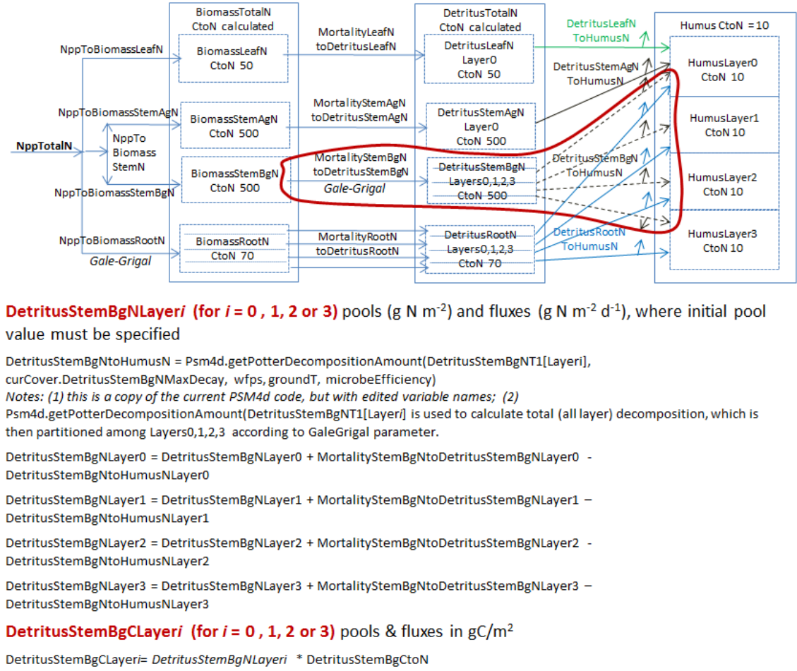
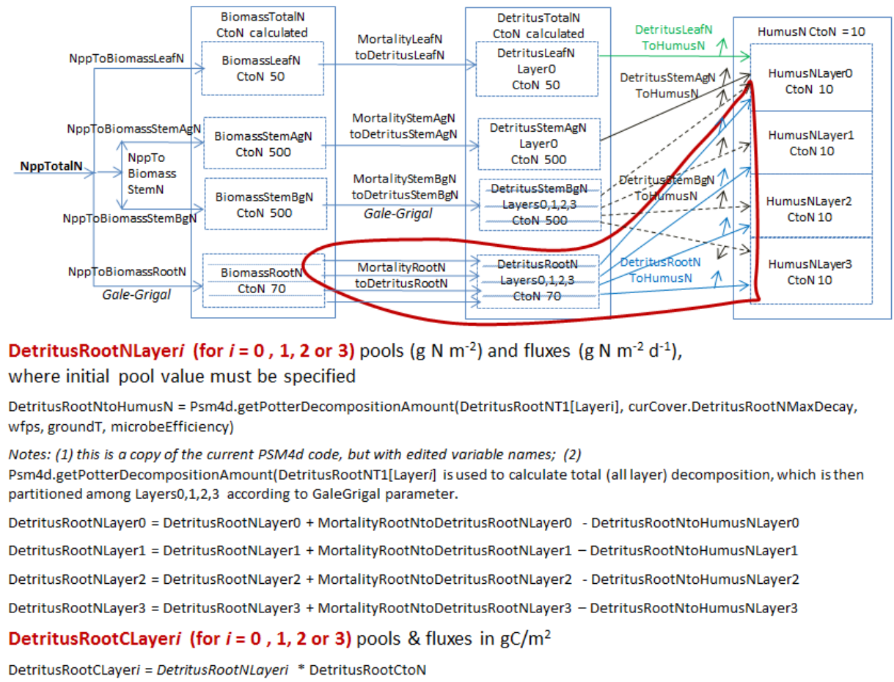
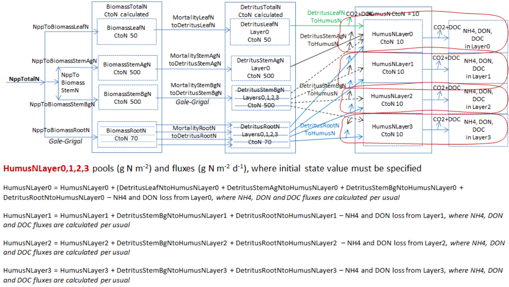
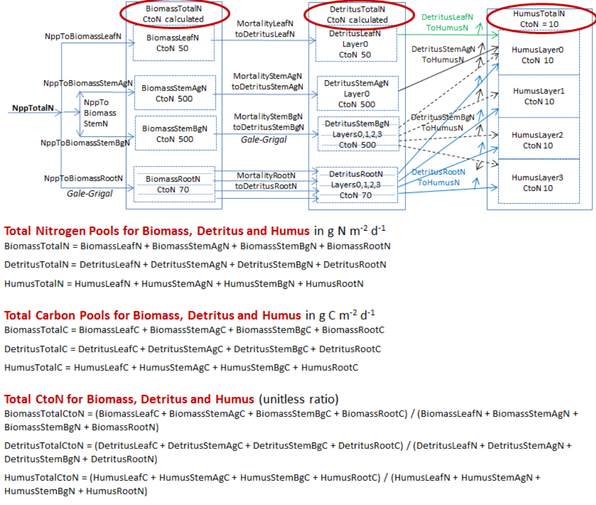
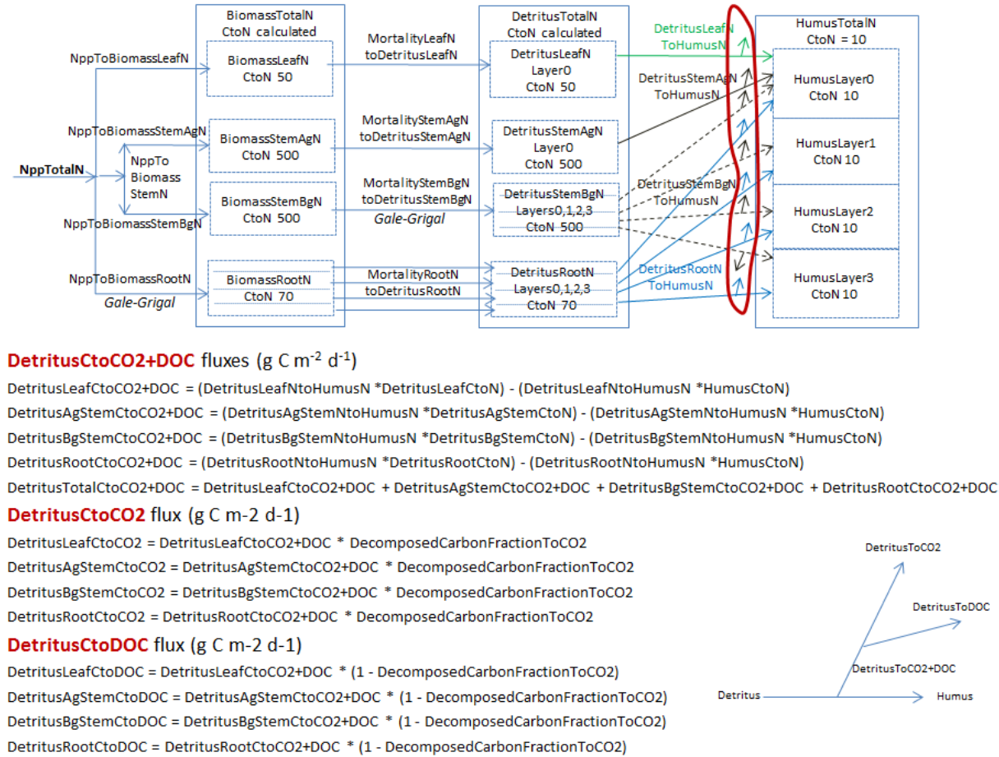
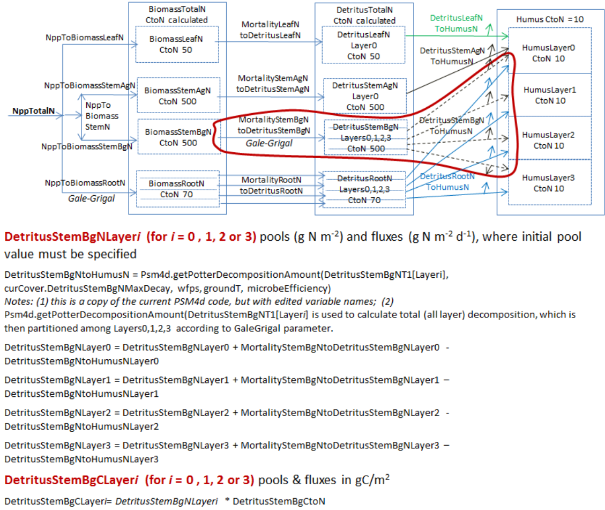
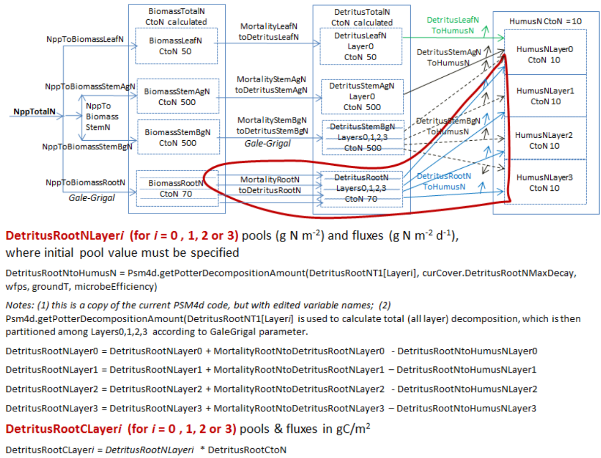
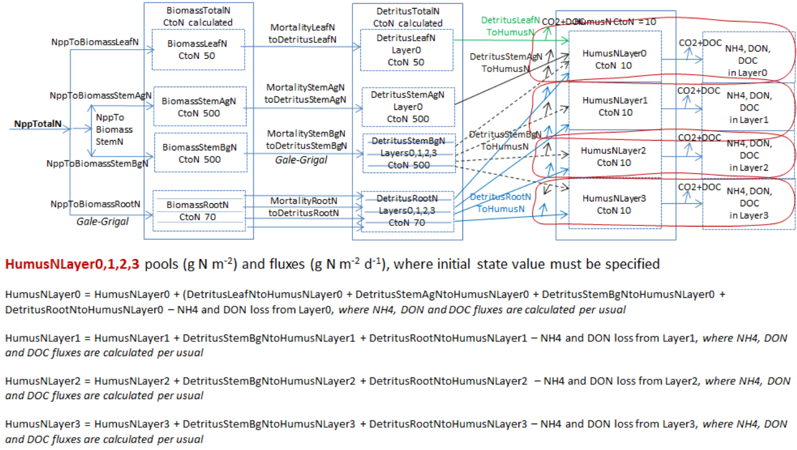
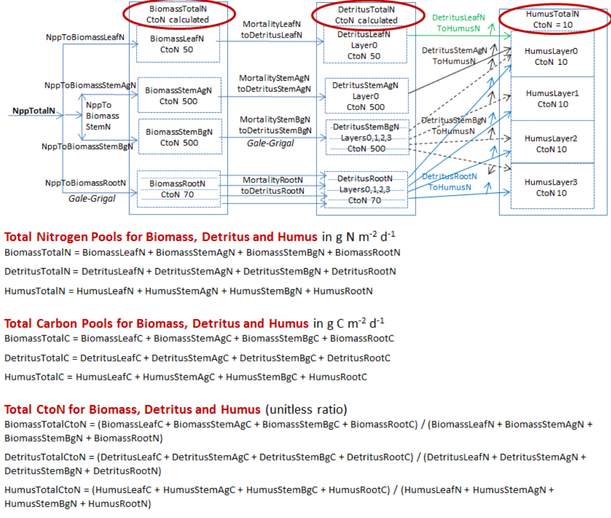
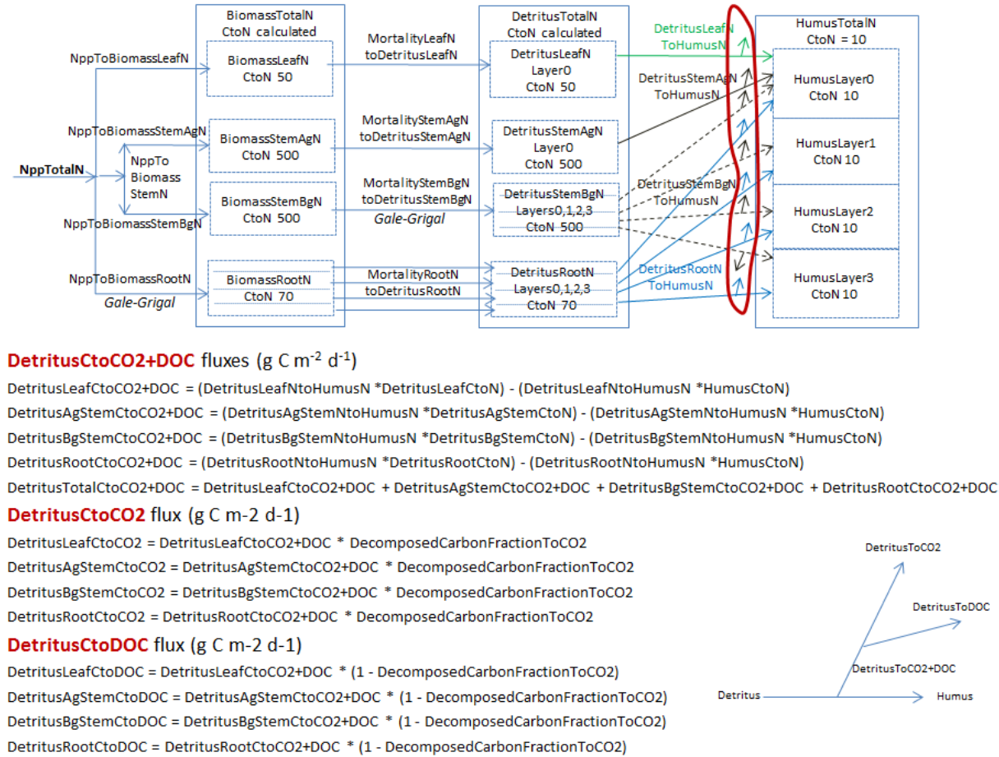

+
Appendix 1: Overview of VELMA's Leaf-Stem-Root (LSR) Plant Biomass Submodel
In VELMA version 1.0, plant biomass in each cell was simulated in aggregate. That is, leaves, stems and rootswere lumped together in a single biomass pool (Abdelnour et al. 2011). This lumped approach greatly simplifiedthe structure and application of the model. Although version 1.0 successfully simulates important aspects ofcatchment hydrology and biogeochemistry (e.g., Abdelnour et al. 2011, 2013), it does not simulate effectsassociated with phenological changes and disturbances and that disproportionately affect specific plant tissues,for example, leaf growth and senescence, defoliation events, selective removal of high or low C/N tissues viaharvest, grazing, fire, etc.
To address such effects, version 2.0 simulates four plant biomass pools: leaves, aboveground stems, belowgroundstems, and fine roots. Main features of this leaf-stem-root (LSR) submodel include:
- Live plant biomass pools for four tissue types (also see Figure 1 and explanation preceding "All Parameters Section 5.0” of the User Manual)ul li Leaves (annual or perennial grasses, deciduous or coniferous trees, etc.) li Aboveground stems (trees, grasses, etc.) li belowground stems (<2 mm diameter, not involved in water and nutrient uptake) li fine roots (<2 mm diameter, involved in water and nutrient uptake)
- Dead (detritus) plant biomass pools for each of the four plant tissue types
- A user-specified C/N ratio for each plant tissue type. In version 2.0, a tissue's C/N ratio is applied to boththe live and dead biomass pools. Simulation of separate live and dead C/N ratios will be addressed in futureversions
- A new plant tissue mortality submodel simulates the loss of live biomass to detritus (see Appendix 1, FiguresA1.1 - A1.4)
- A new decomposition model based on Potter et al. (1993) simulates the decomposition of detritusto CO2 and humus (Appendix 1, Figures A1.5 - A1.8)
- A specified fraction of total plant nitrogen uptake is allocated to each plant tissue type, such that thefractions for all tissues = 1.0 (see Appendix 1, Figures A1.1 - A1.4)
Figures A1.1 - A1.11, below, graphically summarize the LSR submodel structure and model equations. These figuresportray the pools (boxes) and fluxes (arrows) of nitrogen and/or carbon from live to dead biomass and from deadbiomass to the humus pool and atmosphere. Pools and fluxes involving VELMA's four soil layers are also shown. Ineach successive figure, a red encircling line delineates a subset of the LSR system for which text is providedto describe associated model parameters and equations that govern simulated C and N pools and fluxes.Note that parameter names in the VELMA version 2.0 program Java code and GUI do notnecessarily conform to Figures A1.1 - A1.11 parameter names, which were modified using morerigorous naming rules during the VELMA programming process.
Figure A1.1
 
